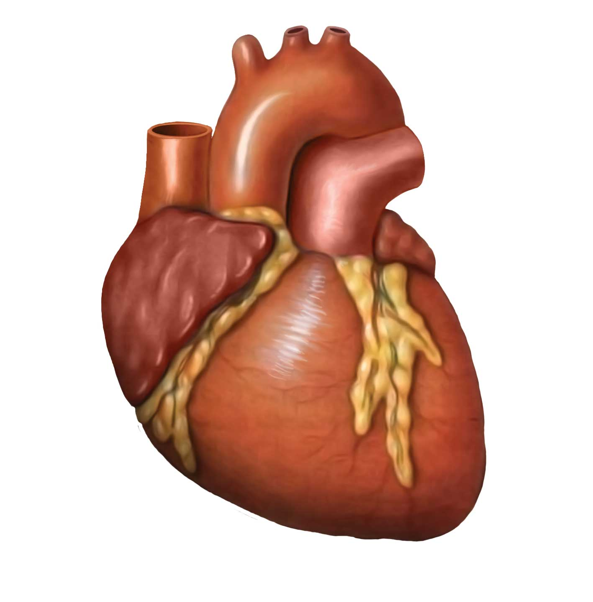
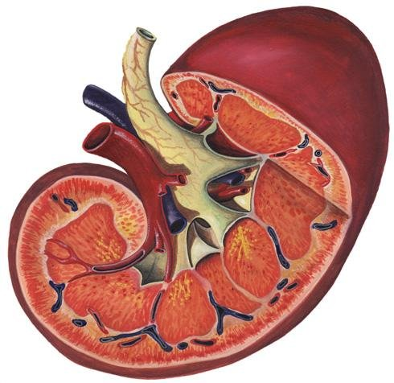
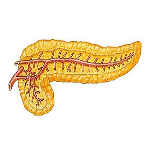
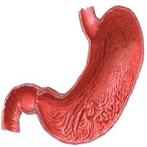
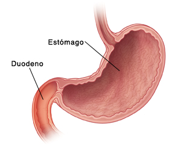
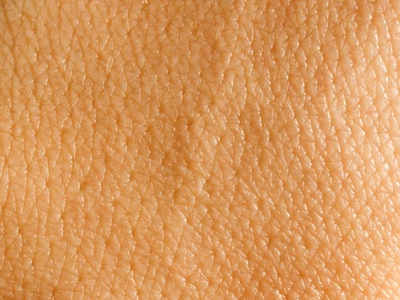
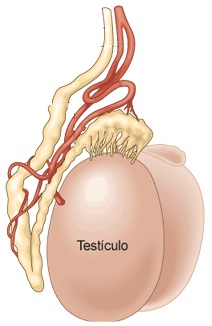
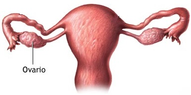
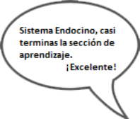

| Cómo se ve | Concepto |
|---|---|
 |
Glándula Pineal Responsable de la hormona Melatonina, se genera cada vez que hay oscuridad para dormir. |
 |
Glándula Pituitaria Glándula compleja que se encuentra en la base del cráneo, conectada al hipotálamo. |
 |
Hipotálamo Es la región del cerebro encargada de regular la liberación de hormonas de la hipófisis, mantiene la temperatura corporal y organiza conductas, como la alimentación, ingesta de líquidos, apareamiento y agresión. Es el regulador central de las funciones viscerales autónomas y endocrinas. |
 |
Glándula Tiroidea Se encarga de regular el metabolismo del cuerpo, es productora de proteínas y regula la sensibilidad del cuerpo a otras hormonas. Está formada por dos lóbulos en forma de mariposa a ambos lados de la tráquea. |
 |
Glándula Paratiroides Son glándulas endocrinas situadas en el cuello, por detrás de los lóbulos tiroides. Estas producen la hormona paratiroidea, dicha hormona se encarga de facilitar la absorción y resorción del calcio. |
 |
Glándula del Timo Produce los denominados linfocitos T,papel principal en nuestro sistema inmunológico. De acuerdo al estado de ánimo la glándula crece o decrece. El timo se ve afectado por los dos sentimientos básicos del ser humano: el amor y el miedo. |
|  | Corazón Es un músculo hueco y piramidal situado en la cavidad torácica. Funciona como una bomba aspirante e impelente, impulsando la sangre a todo el cuerpo. |
 |
Glándulas Suprarenales Son estructuras bilaterales ubicadas en situación superomedial respecto de los riñones. Segrega dos tipos de hormonas que hacen que la sangre sé desvíe hacia los sitios de emergencia, en caso de estrés o situaciones de riesgo. |
|
Glándulas Suprarenales Son estructuras bilaterales ubicadas en situación superomedial respecto de los riñones. Segrega dos tipos de hormonas que hacen que la sangre sé desvíe hacia los sitios de emergencia, en caso de estrés o situaciones de riesgo. |
|  | Riñón Filtran la sangre del aparato circulatorio y eliminan los desechos mediante la orina, a través de un complejo sistema que incluye mecanismos de filtración, reabsorción y excreción. |
|  | Páncreas Es una glándula que segrega hormonas a la sangre para controlar los azúcares y jugo pancreático que se vierte al intestino a través del conducto pancreático, interviene y facilita la digestión, sus secreciones tienen gran importancia en la digestión de los alimentos. |
|  | Estómago El estómago es un órgano en el que se acumula comida. Consta de varias partes que son: fundus, cuerpo, antro y píloro. Es el encargado de hacer la transformación química por medio de los jugos gástricos. |
|  | Duodeno Es la parte inicial del intestino delgado, a nivel del duodeno es que se absorben muchos metabolitos y nutrientes como el calcio, el hierro, las vitaminas y los lípidos. |
|  | Piel Es el órgano más grande del cuerpo, entre sus principales funciones está proteger al organismo de factores externos como bacterias, sustancias químicas y temperatura. |
|  | Testículos Son las gónadas masculinas, coproductoras de los espermatozoides y de las hormonas sexuales. Forman la parte más importante del aparato reproductor masculino. |
|  | Ovarios Órgano reproductor femenino productor y secretor de hormonas sexuales y óvulos. Los ovarios femeninos son el equivalente a los testículos masculinos. |
